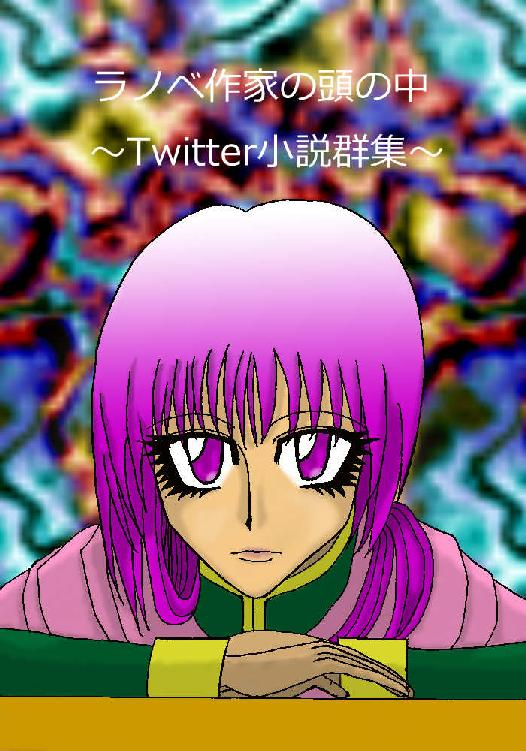

| ラノベ作家の頭の中 3: ～Twitter小説群集～ (風夢書典館) | |
| 望月 葵 | |
| (2016) | |

～Ｔ ｗ ｉ ｔ ｔ ｅ ｒ 小説群集～
●あかぎ
これこれ、そんなところまで登ったら降りられなくなるよ。戻っておいで。
あららら、言わんこっちゃない。そこで待っておいで、今行くから。
二人して腕白なのは結構だが。ほら、いい眺めだよ。見てごらん。やっぱりダメか。
まあ五十年足らずで二十メートルの木登りをしたのだから上出来かな。
●あかぎれ
いっつー、冬の洗い物はきつい。仕事だからしょうがないんだけど。
油ものとか最悪よ、お湯使わないといけないからさ。ハンドクリームも凶器に見える。
でも、使うんだ。だって憧れの先輩がくれたものなんだもん。
妙な噂があったけど、気にしない気にしない。とっとと片づけて出かけなきゃっ。
●あかげら
どうしてこんな場所にあかげらがいるんだ。この辺りは生息地じゃないはず。
うん、口に何かをくわえている。僕に気づいたのか、鳥が近寄ってきた。
随分と人懐っこく、野生の鳥なのか疑問に思えてきた。案の定だったらしい。
姿を変えてやってきた弟は、伝言を預かりにあの城から脱獄したという。
●あかご
「対極の力を持つ。くれぐれも力の扱いかたを教えるときに気をつけろ」
「わかった。どっちのほうが強いんだ」
「どちらかというと生のが強いな。オレの力は抑えられてる」
「万が一のことがあったらどうする」
「心配するな、まず四大属性を覚えさせろ。まずはそれからだ。あとは封印しとく」
●あかさび
あ～あ、ずいぶん手入れをサボったな。こりゃひどい、鍛冶屋に持っていこう。
何やってんだよ武士のくせに。え、持っているだけで誰も寄ってこないって。
阿呆か。いかにお前が大陸一の達人でも、使わなきゃ技もさびるだろうが。
これ、そっぽを向くなっ。ったく、こんな奴に一撃で負けたなんて。
●あかし
王女の証ねぇ。そんなものはないわ。目の前で破壊されてしまったもの。
私を傀儡とし裏から政治を操ろうとしたのでしょう。
あなたこそ潔白を証明できるのかしら。状況証拠はいくらでもあるのよ。
観念なさい、あなたに力を貸すものなど誰もいないわ。裏切り者には死のみ。
これで兄も報われるわ。
●赤字
さて、準備は終わったか。よし、じゃあ紅筆をもってならうように。
そう、最初に円を書くことが重要だ。それから中の絵を描くこと。これで方角が定まる。
これで魔法の威力が変わるんだ。ちなみに赤文字じゃなくても問題ないぞ。
今日は練習で書いているだけだから、わかりやすいようにしただけだ。
●赤地
どうも変な色だな。どういう風にしたんだ。ああ、なるほどな。
地の色とインクの色を混ぜるのとでは、まったく違ってくる。一緒なのは頭の中だけだ。
画材が違うからな。それはしょうがない、別の紙に描いてやり直そうか。
こういう失敗があるからこそわかることだ。気にしないで描きまくるといい。
●アカシア
憧れの国に咲いている花。遠くからだと、黄色いブドウのように見える。
近くで見たらきっと稲穂の実がまんまるなんだろうなって、画像から思う。
海が綺麗で日本と同じ時間軸、だったかな。季節は逆だけど、そんな国。
今度研修で行くことになったんだ。想いが現実を引き寄せるってことなのかな。
●あかしお
うわ～、ここに魚を放りこんだほうがいいんじゃないの。生態系が崩れるか。
海がさびついてるみたい。プランクトンだっけこの赤い正体って。
ふうん、ほかの色もあるんだ。うわ、緑色もあるんだね。これがどううしたの。
漁業や健康に害があるわけ。それは問題だ、天才なんでしょ、何とかしてよね。
●赤地
基本色が赤だからな。あわせづらいんだけど、ほかの色にしろって。
わかったわかった。暗色系で何とか抑えるよ、ケバケバしくなるし。
「ってもさ、肌色が黒いから問題なくね」
だいぶ問題だっつーの。金髪に焼けた肌、アンダーが赤なんざ完全にヤンキーじゃん。
どうやって清楚系見せろってんだ。
●赤信号
ここにいては危険だと、あたしの勘がはたらく。これまでに何度も、何度も。
こんな危険極まりないところにいたら当たり前なんだけどって、ほらきたっ。
ひっ、今度は何よ、ゾンビなわけ。え、キョンシーっていうのあれ。どっちでもいいっ。
こんなところオサラバしよ。ここにあるわけないじゃんよ。
●赤大将
トウモロコシに似ていてる動物、ねぇ。何かしら。あら保育園で習ったの。
うーん、お母さんわからないわ。え、正解を持ってきてるの、どれどれ。
ってコレ蛇じゃないの、どこから持ってきたの。しかも日本にいないわよ、それ。
また水槽から持ってきたのね。ほらほら、お母さんにちょうだい。もう。
●赤丹
ここが目印の場所だな。確かにバレやすいが、子供が考えたにしちゃ及第点か。
花びらと赤い長方形の紙が示す場所は、か。意外に才能あるぞ、あいつ。
必死なんだろうな、戦争孤児だし、生きる術を身につけるにも。よし。
しここに捜し求めていたものが埋まってるなんて。あとでおごってやろうか。
●あかちゃん
この子は絶望のそこにいた私を救ってくれた。夫と子供を亡くした私に。
ずいぶん泣いていたが、覗きこむとすぐにやんで手を差し伸べて笑う。
あの子が帰ってきたような錯覚。さあおいで、今日から一緒にいようね。
綺麗な服に高級なかご。きっと手放したくて手放したのではないのだろう。#tw小説
●赤提灯
やべ、赤提灯がきたぞ。散ってずらかれっ。よし、これであいつらも終わりだ。
ったく、余計な面倒を起こしやがって。アタシらが何したってんだか。
お前もよくこんな考え思いついたよな。我が弟ながら敵に回したくないね。
まあ、あいつらなら大丈夫だろ。ＬＩＮＥもきてたし病院送りもいないしな。
●あかつき
ここでお別れね。もう二度と、この世界では会えないけど。
でもすっきりしたわ、あなたにちゃんと謝ることができて。私の気がすまないのよ。
本当に気にしないで。あなたは私たちを愛してくれたもの。だからあそこに行ったのよね。
もう大丈夫。気にしないであなたはあなたの道を歩いていってね。
●あかつち
間違いないな。あちら側からやって来た何よりの証拠だよ。なぜかって。
この土はそこでしか取れないものなんだよ。土が天から降ってこない限りはね。
はっきりしたのだから、いい加減白状したらどうだい。痛い目に遭いたくなければ、ね。
おっと、脅しても無駄だよ。切り札はこちらにあるのだから。
●赤手児
こらこら、同類に手をだしてどうするのかな。ん、気づかなかったかい。
まあ、こちらは上手く化けているからね。本物に見えるだろう。
残念だが私には効かないよ。どうしたのかな、様子が変だけど。何だい。
なるほどね、それは困るだろう。なら私が水を汲んできてあげよう。待っていなさい。
●アカテコ語
へええ、メキシコってメキシコ語を話してるんじゃないんだ。え、スペイン語なの。
え、メキシコ語ってないんだ。初めて知ったよ、へえ、いろんな言語があるんだね。
世界で旅をするなら英語のほうがいいのかな。適当に何とかなるって、あんた。
きっとあんただけだと思うけど。さすが放浪者ね。
●赤点
なんちゅう点数とってんのよ。しかも補習をフケようとするなんて。
いい度胸じゃないのよ。学年が違うとはいえ曲がったことは許さん。っとに。
そっちはあの人たちにやってもらうから、勉強に集中しなさいって。
って、そのノートは何なの。落書きばっかじゃねぇかっ。一回シメてやる。#tw小説
●あかとき
日本も歴史が長いからか、制度も文章も変わってるよ。傍若無人も同じくね。
責めるつもりはないけどねぇ。元々面倒くさがり屋の生き物だからしょうがない。
文明も楽するために生まれてきた。それはいいことでしょ。便利だしさー。
上の風景は不変なものなんだよ。そう、数千年の時を経ても、ね。
●あかときくたち
さあさ、遊ぶ時間だ。今時分は我らが支配し現世にも少し顔をだせる刻時。
こわ～い番人もいるから大事にはできないが、いたずらぐらいなら構うまい。
そうそう、最近面白い人間がいるとか。ご存知か。さすがは通よの。
ほう、それはそれは。また面倒事が起こっておるようで。それは見物だのう。
●あかとんぼ
へえ、その言葉を知っているということはあんた海軍の者だね。おっとっと。
安心しな、俺も今はただの一般人。どうこうする気はねぇからさ。
ままま、ちょっくら昔馴染みを探していてね。こいつを知らないかい。
そうか、いやいいんだよ。簡単に見つかるわきゃないし。お茶、ご馳走さん。#tw小説
●あかにく
どうだい、この見事な肉は。赤みが多いからサッパリしてておいしいよぉ。
へい、毎度。奥さん、今日もいい買い物したね。またよろしく頼むよ。
さてっと、今日も繁盛したな。おっと、裏で待っててくれよ。まだ早いって。
お待たせ、ほらよ。あとで美味い飯持っていくから、先に始めててくれよな。
●あかぬけ
よぉし、上出来上出来。一晩でそこまで身につけば充分だろ。
あとは絶対しゃべるなよ。口開いたら絶対にバレちまうからな。当たり前だろ。
見た目はそっくりでも中身が全然違うんだ。口調もトーンも違うしな。
まあ付き人をつけておくし、部屋の中にいるから大丈夫だろう。念のために用心しとけよ。
●あかね
かわいらしい花を咲かせるアカネ。たくさんの種類があり、見た目も多様だ。
本当に同じアカネ科なのかと思うぐらい違うが、それもそれで面白いものだ。
実はコーヒー豆ができるコーヒーノキもこの科の一種で、白い花が咲く。
彼女がコーヒーが好きでよく育てていたな。ちゃんと一からやっていたよ。
●あかねいろ
あの色を見るともう今日が終わるような気がしてならない。日が落ちるからか。
闇に包まれた中では身動きがとれない。よほど訓練されない限りは。
そう、夜にまぎれて行動する者もいる。たいていはよろしくない前触れだが。
逆にそういうものを引きこめれば心強いということだ。さて、どうしようか。
●あかねずみ
あかねずみと呼ばれるコソ泥をご存知だろうか。闇夜に金銭を奪う小悪党だ。
通常、黒や濃紺などの服をまとうにも関わらず、真っ赤をまとっている。
目立ちたがり屋なのかは知らないが、見事な手口であっという間にもぬけの殻。
民衆たちでも大人気な正体不明の英雄。役目だが捕まえるのは気が重い。
●あかはた
ほう、お前が反乱軍の首謀者か。どんな豪傑かと思えば、若造ではないか。
若いゆえか世間を知らぬのだろう。どうあがいても次期国王は決まっておる。
民が認めていない、とは。笑わせるな、しょせん民は貴族の食い物にすぎん。
な、何だお前たちは。おのれ、たばかりおったな。この場で処断せよ。
●赤旗
へーけサマはそんなに偉いんだ。ふーん。たかが人間のクセにさ。
今度言いがかりつけられたら脅してやろう。火で燃やそうか、氷漬けにしようか。
あ、物の怪に食わせるのも面白そうだな。百の犬猫に追いかけ回すとか。
はいはい、戻りますよ。すみませんね、ちょっと出かけただけなんだよ、本当に。
●あかはだか
この世に生を受けるときは、皆が皆、赤裸の状態、何も知らない無垢な状態だ。
しかし、成長していくにつれ、とくに人間は仮面という皮をかぶり始める。
そうしなければならない状況になったり、時としてなる立場もそうさせるのだ。
だから、わからなくなっていくのだろう。本当の自分がどこにいるのか、を。
●あかはらいもり
目で読むにも音読するにも面倒な奴。早口言葉でもいけんじゃないの。
お腹部分が赤いイモリのことなんだけど、ちょっと怖いわ。腹部がとくに。
上から見ると普通に感じるんだけどね。本当、生物の進化って不思議だわ。
これから研究が始まるけど、どこの配属されるのかな。できればあそこがいいな。
●あかふね
おう、赤船様の登場だぜ。ありゃあ随分大きな獲物じゃねぇか。へへへ。
慌てなさんなって。相手はお国様だ、事を大きくするわけにもいかねぇだろ。
警備が固いからな、夜決行にしたのは目くらましでもあるし忍び込みやすい。
美味い物もついでに、っていきてぇとこだが。大人しくアレだけにするか。
●あかまつ
昔からこの場になる赤松は、単に大きいだけでなく霊木としても有名だ。
威厳を感じるだけでなく、手入れをされているので洗礼もされているように見える。
また、ここで待ち合わせをすると友人、恋人問わず永遠に別れなくなるとか。
今日もまた辺ぴな場所に、待ち人が絶えずやってくるという。
●あかみ
どうしたんだ赤くなって。熱でもあんのかよ、どれどれ。
うーん、別に熱くないな。この部屋が暑いわけじゃないだろ、マジでどうしたんだ。
いってーな、何しやがんだこの凶暴女。そんなんだから彼氏もできねぇんだぞ。
ったく、幼なじみが心配してやってるってのに。ひどくないか、もう。#tw小説
●あかみち
おかしいな、ここは国有地のはず。どうしてこんなものがあるんだろう。
上司に報告しておこう。どう見ても意図的に看板が立てられているし。
何なんだ、あんたたち。そんな物騒なものを持ってま～おっかないこと。
手間が省けたや、かかってきなよ。そんでもってリーダーに会わせてもらおうか。
●あかめ
うわー、化け物みたいな目をしてんじゃん。ひっどいね、はい、目薬。
また徹夜で考えてたわけか。よくやるよホント、研究者の鏡だね。参りました。
オレは興味ねぇもん。いくら才能があったってやりたくないもんはやりたくない。
ぎゃっ、だからって実験体にされるのも納得いかねぇし。ひぇっ。
●あからがお
顔くろっ。部活頑張ってますねぇ、思いっきり叩いていい。やっぱダメか。
じゃあ氷つけたげるよ、痛くて絶叫するかもねぇ。ふふふのふ。悪魔って。
そりゃ～、部活ばっかりで相手にしてもらえないんだもん。つまんないでしょ。
ほらほら、お仕事はいってるよ。ちゃんと回収できたら許したげるから。
●あかり
人の頭ほどの明かりが、通路を照らしている。幻想的で、この世とは思えない。
一体ここはどこなのだろうか、私はどうなってしまったのだろうか。
「こんにちはお嬢さん。何を迷われているのかな」
白い服に白い布で覆われた顔。頭部には白い帽子をかぶせており、若いのか老人なのかも分からない。
●あがり
いつまでそこに甘んじているつもりだ。お前ならもっと高みに行けるだろう。
お前以外は認めない、父上が何と言おうともだ。お前以外なら家出してやる。
とっとと実力をだせって。どうして出し惜しみしてるんだよ。んとにもう。
どちらが先でも結果は同じだ。過程なんてどうでもいいじゃないか。
●あかん
何が開かないの。え、違うって。駄目って意味なんだ、ふうん。方言かあ。
すみませんねぇ、関東出身なんで知りませんでしたー。でも面白いね。
こんな狭い日本でもこれだけ違うんだもん。暮らしていれば覚えられるかな。
また聞くかもしんないから、そのときはよろしくね。じゃ、またね。
●アカン語
へぇ～、ガーナって国で話されている言葉を、何だって。どうするっつった、今。
お前な、どうやって修得するわけ、あっちの世界に行けるってのか。
意識だけとばして学んでくるって、どういう意味だ。訳わからんぞ。
あのなぁ、この世界の言葉を掛けあわせればいいだろ。何で異世界なんだってば。
●あかんぼう
この先の運命などお構いなしにミルクを飲む赤ん坊。それだけなら幸せかもな。
何も知らないっていうことは、それだけ楽なのかもしれない。使命も必要ない。
だが、このあざを持った者はどうしても巻きこまれてしまうのが宿命だ。
何としても守らなければ。この子が死ねば、世界は終わってしまう。
●赤ん坊
恥ずかしい奴め、あんなにはしゃいで。まあ、仕方がないか。初めてだし。
建物の中からの空しか知らないからな。平民として育てるには目立ちすぎる。
今でこそ化けることが出来るがな。これ、遠くに行くとはぐれるぞ。
既につけられているか。まったく恐れ入るよ。そうまでしても覇権が欲しいのか。
●あき
秋といえば食欲。うまいもの市があったらすっ飛んで行くのは当たり前。
「あんた、どんだけ食べるのよ」
「まだまだ。こんなに食べ物がいっぱいあんじゃない」
友人はため息をつくけど、付き合いがいいのでとても助かる。
さて、今日もフードファイターとしての修業をしてこようっと。
●秋
もう少しであの時期だな。ぬかりはないか、気づかれてないだろうな。
よし、戴冠式が終わった直後がタイミングだぞ。外で大暴れしてやれ。
裏から逃げた女王を連れ去るんだ。取り巻きは気にするな、先に手を打っておく。
まあ、ここまでくれば問題ないさ。周りは俺たちの味方ばかりだからな。
●あきあかね
おやおや、あのトンボが来てるとはね。そりゃ日が暮れるのも早くなるわけだ。
待ちわびた収穫のときでもあるし、涼しくて過ごしやすい。いい季節じゃないか。
さてっと。今日の仕事はこれで終わりだよ、ご苦労さん。ほれ、待望の飯だよ。
野菜も採れたからね。今日は腕を振るったから残さずお食べ。
●あきあき
あんた長続きしないわね。いつからそんな遊び人になったのかしら。
アイスティーぶっかけられて当然じゃない。よかったわね、ホットコーヒーじゃなくて。
本命がいるならちゃんと向き合いなさいよ。っとに世話が焼けるんだから。
それこそ余計なお世話よ。わ、私にだって好きな人いるんだからっ。
●あきあじ
まあ、諸説あるが。今は産卵のための鮭を指しているよ、この言葉は。
秋の味覚の代表なのか、アイヌ語から来てるって説もあったな。
っとまあ神のみぞ知るってことかね。研究者がそれじゃまずいけどさ。
文字の歴史を解くだけでもいろいろ出てくる。人間って本当に面白い生き物だよね。
●あきあみ
え、何これ。あ、エビなんだ。エビの、塩辛か。うまそ～じゃん。
へえ～、九州ではよく獲れるんだ。秋口にでるんだね、この白いの。
かきあげにしてもうまそうじゃん。ねねね、作ってよ。俺の分も。
自分でやれって。いいならやるよ、火事になっても知らないけどね。
ほら、俺って火力強いからさ。
●あきいえ
こんな話を知ってっか。あの空き家のことだよ。
何だよ、せっかく教えてやろうと思ったのに。けっこう噂になってんのか。
へええ、じゃこれは知ってる。あの中に実は死体があったって話。
人間じゃなくて動物のだよ。だから夜になると化けてくるんだと。
捨てられた動物の痛みを知れ、ってな。
●あきかぜ
妙な風だな。この時期なら逆の方角から吹いてくるはずなのに。
誰かが操ってるだって。風の精霊をか、いったいどうやって大それたことを。
なるほどな、どっかの礼儀知らずがバカをやって怒らせた、と。それで逆風ね。
こりゃ大変だ、風の精霊が怒っちまったら手がつけられないぞ。早く行こう。
●あきぎり
昔々、ある姫君があきぎりを大層お気に入りでした。嫁ぐ際も持って行ったそうです。
しかし旦那様は酔うと暴力をふるい、姫君はいつも怯えていました。
怒った花は物の怪と化し、姫様が寝ている間に男を食べてしまいました。
後に人間になった彼は姫君に真実を話し、永劫幸せに暮らしましたとさ。
●あきくさ
ごめん、読み間違えた秋草ね。浅草だと思ったよ。目が疲れてるのかな。
で、秋草といえば何、か。うーん、おかゆ、かなぁ。秋の七草っていうじゃん。
内容は知らん。ググればでてくるんじゃない。って何でこんな話になったんだっけ。
秋といえばから始まったんだっけ。このままでいいんじゃないの。
●あきぐち
秋っていつ始まったんだかわかんないよね。気にしないとすぐ終わっちゃうもん。
何だか恋と同じように思わない。失礼ね、気持ち悪いなんて。
詩人でもないわよ。なんとなくそう、思っただけ。本当に。あいつみたいに。
ほら、雪みたいでもあるじゃん。あったのにすぐ溶けて消えちゃうなんて、さ。
●あきぐも
雲にまぎれて煙を上げる。これ合図だ、覚えとけよ。そう、のろしだよ。
まあ、何かが上がってるってのはバレバレなんだけどな。合図とまではいかなくても。
ただ、よく見ておけよ。雲と煙がくっついた瞬間に飛びだすんだからな。
奴だからできることだ。だから、タイミングは間違いないはずだぞ。
●あきご
秋の初めと終わりに、蚕の糸はよく採れる。春も同様だ。
見た目はムシ嫌いなら悲鳴をあげて逃げるだろうが、好きにはたまらないだろう。
人間の世話をなくしては生きられない不思議な生き物でもあり、桑の葉を食べる。
お蚕様は今日も元気に糸を吐き、羽化をするときを待ち、人も同様に待っている。
●あきさめ
季節の雨か。そういやあ最近涼しくなってきたし。故郷でも降っているだろうな。
故郷といっても戦火の中で育ったからお前が感じているのとは違うだろうが。
この剣は身を守り生きるためだけに振るってきた。だがそれも終わる。
初めて自分以外のために使いたいと思った。それがお前なんだよ。
●あきす
小鳥が口を大きく開けている姿が愛らしかったのだがな。巣立ったようだ。
月日が経つのも早いものだ。お前がこの世界に来てから数年か。調子はどうだ。
あまり無理せぬようにな。その身に何かあったら一大事だから。国も私にとっても。
私は良い。気にせず今は自分の身体を案ずるのだよ。
●あきすねらい
ったく、何でこんな格好をしなきゃならないんだ。これじゃまるで泥棒だぞ。
でもって家の前にいて、ワザととっ捕まって中に入って。それから調査かよ。
も～、せめて潜入捜査にしてくれよ。牢獄なんかに入りたくないのに。
そういってもしょうがないか。外壁からは入れそうにないもんなぁ。
●あきぜみ
うん、まだセミが鳴いているのか。もうだいぶ気温が下がったのに。
ふうん、秋になく種類もいるんだ。さすがに詳しいな。いや馬鹿にはしてないぞ。
自然と共にするならそれぐらい常識ってことか。俺には理解できんが。
また声をかける。それまでの答えをだしておいてくれよ。期待してる。
●あきぞら
澄みきったいい空だなぁ。過ごしやすいし、散歩にもってこいだね。
どうしたんだい、そんなに怖い顔をして。ああ、それね。断っただろう。
何が縁談だ冗談じゃない。どうせ相手は地位か金目当てだろ、興味ないね。
そんなことより賭けをしないか。もちろん内容はわかってるだろ。さあ、勝負だ。
●あきた
緑の季節が終わり、やがて黄金が周囲を支配する。待ちに待った時期だ。
田んぼには嬉々として入っていく男たちの姿。まるで大きな子供のようだ。
小さな子供も混じり、収穫を日が出ているときまで行う。そのあとは眠るだけ。
今と昔と何が違うのだろうか。仕事の内容が変わっただけのように見える。
●あきたいぬ
犬にもたくさんの種類があって、すべての名前を言える人もそういないだろう。
日本犬の一種である秋田犬は、実は国の天然記念物で、唯一の大型犬である。
もちろん日本犬内での話だ。個人的にはポワ～ンとした顔がたまらない。
元々猟犬や闘犬としての気質も持っているが、忠誠心もある犬なのだ。
●あきち
建物がない土地に、前触れもなく一軒家が出現したらどう思うだろうか。
たぶん、驚きを通りこして何も感じないかもしれない。私がそうだから。
「どうしたんだ、変な顔して。しばらくここを基地にしようぜ、長期戦になりそうだしな」
術だか何だか知らんが、勝手に造って住むんじゃないっ。
●あきづき
この時期の月は一番美しいな。空気も透き通って風も程よく冷たいし。
酒を片手にしてるからなおのことだろう。気分もちょうどいい。
おや、無粋な輩がいるものだ。こんないいときに邪魔をするとはね。まったく。
覚悟はできてるのだろうな。せっかくの場を台無しにした代償は払ってもらおう。
●秋の七草
秋の代表をする草花といえば、それは七草だろう。自慢じゃないが知らないけど。
課題がでなかったら調べようとも思わなかったね。興味ないし、花なんて。
って、何でそんなにスラスラ書けんの。え、元々知ってるって。あ、そうか。
古くから伝わる、というより生きてるんだもんね。そりゃ当然か。
●あきばれ
初春とは違い、物悲しさはあるな。色がなくなるからだろうな、たぶん。
空気が乾燥しているぶん、綺麗な青空が広がるが、大地は寂しいものだ。
季節柄だから仕方がないか。気持ちは自分で決着をつけるものだし。
何かを始めるにも適した時期かもね。さあ、どういう風に歩みたいのかな。
●あきまつり
ほうほう、良い心がけじゃな。ちゃんと我が力を与えたものを奉納するとはな。
見返りを求めるわけはないが、気持ちが良い。自分以外の誰かに与えるのは。
しかし人間は傲慢だ。吸い取るだけ吸い取ってふんぞり返っている者もいる。
そうだな。よし、一度あの者を没落させてどうなるか見てみよう。
●あきやすみ
昔は秋休みっていうのはなかったらしいね。恐ろしい。遊べないじゃん。
しかも、土曜日も休みじゃなかったんでしょ。学校に缶詰じゃんよ。ひい。
んま、やりたいことが見つかっている人間にはゆとり教育はいいんじゃない。
人によるよね。環境も人生も、何を選ぶかによって全て決まるんだから。
●あきやま
この辺りは以前、明山だったんだよ。でもね、政府の意向でダメになったんだ。
理由は簡単。国の要人にとって都合が悪いことが起こったからさ。
別にさ、保身に走るのも構わないがちょ～っとやりすぎなんじゃないの。
ほら来た来た、来たよ。無罪の罪で殺された民草たちの登場だ。あ～ぁ。
●あ行
アイウエオ順って不公平だと思わない。苗字は選べないのにさ。っとに。
何でアがつくからって一番前にならにゃならならんのかね。嫌すぎる。
常に後ろになる名前はいいよね。寝られるし、隠れてメシ食えるし。
別にいいか。ラッキーなことにいい出会いもあった。ちょっと狙おうっと。
●あく
日本語って本当に面倒くさい、同音異義がね。ほかの言語は知らないけど。
まあ、聞き間違いが多いこのスバラシイ耳のおかげか逆パラダイスだよ。
思い込みが強いのかな。別にいいんだけど、楽しんでもらえれば。
いじられるのは勘弁だけど。よく天然っていわれるのは未だによくわからない。
●悪
お前が悪いってな。何でもかんでも人のせいにしやがって。何様だコラ。
大体お前は何してんだ。口ばっか動かしやがって、手を動かせよ、手を。
貴族も王族も関係ねぇよ。やるかやらないか、ただそれだけだろうが。
悔しかったら結果だしてみろ。上から物事いってるヒマがあるならな。
●悪意
利用するって、どうやってやるの。ちょっと、何考えてんのよ。
人の心を利用するなんて外道じゃないっ。え、センリャク。んなコトわかんないよ。
こっちが有利になるために動くってこと。う～、どういう意味なわけ。
あ、手玉にとるってことかな。うちらのために動いてもらうってことね。うんうん。
●悪行
お主も悪よのう、とか抜かす気かこのボケ。てめぇのせいで大変なんだぞ。
小物風情がふざけやがって。とっととこっち来てケツ拭けってんだ。
さあ、命が欲しかったら洗いざらい吐いて楽になっちまいな。こっちも気が立ってんだ。
上の人間にはすでに伝え済みだぜ。逃げられねぇからな。覚悟しな。
●悪事
こんの悪ガキまたいたずらして、っとにもう。ほかのことに頭使いな。
以前お袋にいわれた言葉を思い出す。怒られてばかりだったけど。
親父がいないから女手ひとつで育ててくれたが、戦火に巻き込まれこの世にいない。
あの悲劇を誰にも味わって欲しくない。だから頭を使って終わらせてやるんだ。
●悪食
苦しかっただろう。ちょっとしたものだが、少しは足しになる。
町についたら宿をとってきちんとした食事をとろうか。好きなものを頼むといい。
ん、どうした。気にするな、あのような生活をさせるのは不憫すぎるからな。
子供を守るのは大人の義務、気にしないでとりあえず食べるといい。
●悪疾
これはひどいですね、今すぐ払わなくては。強力な力が必要ですよ。
ご安心ください、私が神父様に掛け合ってきます。お待ちください。
お待たせしました、少々高額になりますがいかがなさいますか。
ええ、これで治りますよ。悪魔の仕業なのですから。
ふふふ、病気のせいにすれば何でもできる。
●悪質
不純物が混ざってるんだと思います。こんなにしょっちゅう折れるのなら。
この状態で直すのは意味ないので、初めから作り直したほうが早いかと。
ええ、材料さえあればすぐ作れますよ。剣以外には大丈夫ですか。
矢尻と槍ですね、そこに試作品があるので確かめてもらってからでも構いませんよ。
●悪手
このヘタクソ、どこに射かけてんだっつーの。ヤバくなったじゃないか。
あっちゃ、どうすんだよこの状況。入り乱れちまって射ちづらくなったし。
ん、待てよ。馬が暴れ始めたってことは、だ。そうか、その手がある。
お前、敵将のツラ知ってるんだったな。よし、どいつか教えろ。手本を見せてやる。
●握手
油断ならないな、相当の手練だぞ。食わせものの目つきと雰囲気をしてる。
気をつけろよ、本人はもちろん、周りの人間にもだ。似た者同士が集まるからな。
そういう世界だってことだ。お前はまだ若い、言葉を鵜呑みにするなよ。
若いとなめられる傾向がある。早く実力をつけるんだぞ、いいな。
●悪習
そのクセやめなさいって。何が本能に従って生きてるよ。はた迷惑極まりないわ。
ったく、いい加減にしないと頭の表皮ごと引っこ抜いて丸坊主にしてやるから。
音楽の腕はいいのに女癖が悪いなんてまあタイヘン。問題も起こすしね。
何であんたなんかに嫉妬しなきゃいけないわけ。ばっかじゃないの。
●悪臭
「ひっでぇな、鼻がひん曲がるぞ。何の臭いだよ」
「腐った肉と血でしょうね。そういう施設ですから」
「こりゃアイツを連れてこなくて正解だな」
「女の子には無理ですよ。博士の娘がここにいるはず」
「あのクソ女か。万倍にして返してやるぜ」
「全員借りがあるからな。確実に潰しにいくぞ」
●アクション
これはアクション映画にでられるわよ、絶対。ＳＦみたいに飛び回ってるもん。
何が悲しくて物の怪の相手をしなきゃなんないのよ。あの世界で大人しくしててって。
本物の刀に魔法みたいな火やら水やら風やら。日本かここは、本当に。
とっとと終わらせて平穏な日常を取り戻さなきゃね。平凡が一番。
●悪神
天変地異は神々の仕業と恐れられていた時代。それを沈めるための儀式があった。
一番効果があったとされるは乙女の人身御供。悪神を沈めるために頻繁に行われていた。
それを良しとせん若者が現れ、愛する娘と共に逃げだした男がいた。
追いつかれたふたりは自害をし、後に碑を建てられたという。
●悪心
子供の頃から秘めた想いは、今や隠すことができないぐらい成長している。
彼女は私の気持ちに気づいていたが、相手は良家の姫君。釣りあうはずがない。
それでも彼女の幸せを願った。彼女が笑ってくれるならそれでいいと。
そうでないなら話は別。嫉妬に駆られ、刀を抜くのもまた一興なのだろうか。
●悪臣
まったくあのタヌキ大臣め。オレが若いからといって見下してるな。
地位も力もこちらのほうがあるというのに、ずいぶんと食ってかかる。
あいつもあいつだ、よく我慢してるよ。王だから当然だが、しかし、だ。
いつ尻尾をだすことやら。隠れるのだけは一流だ、気取られないようにせねば。
●アクス
ここは俺らに任せな。力で押すならオノが一番だろ。あんたらは早く行きなよ。
さあて、と。邪魔者はいなくなったし、野郎共、気合入れろよ、ここは最後の砦だ。
相手のすばやさに翻弄されるな、確実に当てていけ。そう、散らばるなよ。
よし今だっ。投降を呼びかけ、拒否するものは排除しろ。
●悪水
どうなってるんだ、どうも排水が悪いぞ。うん、何だまたゴミかよ。ったく。
本当に迷惑だな、自分の部屋にゴミを投げ入れられたらどう思うんだかな。
自分がよければどうでもいいなら、それ以上の力を持つ人間に潰されるだけなのに。
まあ、日頃の行いは何かしらの形で返ってくる。そんなものさ。
●悪性
病か。この手は確かに治しづらいが治らないわけじゃない。条件があるが。
特別な薬草があってな、それを煎じて飲めばたちまちに治ってしまうんだよ。
欲深い人間がほとんど刈りとってしまったから、めったにお目にかかれない。
それでも行くのならこれを持っていけ。きっとお前の力になる。
●悪政
お優しかった兄上らしくない。何故あの様な政（まつりごと）を行うのか。
これでは民が苦しむだけで食べていくことすら難しくなってしまう。
確かに義務を果たさないのは論外だが、それはほんの一部のはず。全体ではない。
何かあるはずだ、豹変の原因を必ず突き止めてみせる。あまりにも哀れだ。
●悪声
このうめき声はどこからきている。獣ではないようだが、魔物とも違う。
なるほどな、この森自体が結界に包まれていたのか。閉じ込めたつもりらしい。
確かに普通の者ならたまったものではないだろうが、突破口はいくらでもある。
さて、規模や種類を調べてくるか。要因を知れば対応できるからな。
●アクセシビリティ
人間は怠惰な生き物だな。意識するせざるを関係なく。褒め言葉だぞ。
文明が発展したのもそのお蔭というもの。遺伝子に従った結果やもな。
しかし、最近は悪い面が多く見られる。その様に生きて楽しいのだろうか。
まあ良い。己のことは己で決めるよう人を創った。気づく気づかぬは本人次第だな。
●アクセス
ちょっと何考えてんのよ。それ不正接続じゃないのっ。犯罪よ犯罪っ。
バレなきゃいいって、そーゆー問題じゃない。道徳の問題だっつーの。
そ、そりゃデータを見なきゃわかんないけどさ、本人から聞きだすとか、あるじゃん。
メンドくさいって。効率化は大事だと思うけど。どういう神経してんのよ。
●悪銭
金に囲まれて幸せだったか。なら早く、夢路から目を覚ましてもらおうか。
馬鹿な女だ、男を騙していたつもりが利用されていたとも知らずに。
恋は盲目、などと言うつもりはあるまい。怨念めいた欲は顔にも出てるぞ。
札束が持ってきたのはどうやら恨みのようだな。甘んじて受けるがよい。
●アクター
人間はいくつもの役を演じているが、気づいている者はあまりいないようだ。
仕方がないかもな、そこまで意識するほど時間的な余裕もないのかもしれぬ。
だが、そうやって己を見つめている人間は必ず咲き誇るであろう。
長くても百年余りの寿命。たいした長さでもないが、人間には十分なのだろう。
●あくち
元気な雛鳥は、親鳥からえさをもらえる率が高くなると聞いたことがある。
幼いながらも強気者が勝つ、ということなのだろうか。まさに弱肉強食だ。
自然の摂理なのだから、逆らえることではないだろう。しかし、人間は違う。
弱者を踏みにじるだけではいつかは足元をすくわれる。これも摂理だろう。
●アクチオ
ったく、強欲どもがギャアギャアと。うるさいったらありゃしない。
遺言状でそうなってるんだから大人しく言うことを聞けばいいのに。
イイ大人が金目当てに騒ぎ巻くってるなんざ、子供に見せれるモンじゃないしな。
オレはこれがあればよかったんだが。はあ、しばらく家でれないな、これは。
●アクチニウム
何その単語。え、化学でやったって。覚えてなーい、弁当食べてたもん。
当たり前じゃん、育ち盛りだよ私たち。休み時間にはおやつが鉄則でしょっ。
えー、ひど～い。食うか寝るかのどちらかしてないなんて暴言だよ～。
ちゃんと部活もしてんじゃんよ。まあ、休憩中にケーキ食べてるけど。
●アクチノイド
薬っぽい名前だね、のどか口によさそう、何となく。
え、暗号って。どこをどうすればそうなるわけ。ゲンソノソウショウって。
教科書に書いてあったような気がするけど、それがどうしたの。
確か十五元素あったと思うよ。え、それが答えだって。つまり、は。
十五の部屋のどこかに、アレがあると。
●アクチュアリティー
夢想バカかと思ったけど、どうにかなるもんだな。お前のは狂気に近いって。
気持ちはわかるぜ、かなえられるならかなえたい生活になるしな。
ただよ、世間知らずのお坊ちゃまがいったって、こっちは腹が立つわけさ。
最初は頼りなかったが、こう見せられちゃあよ、やるしかねぇだろ。な。
●悪童
なあ聞いたか。最近、この辺りに悪ガキがでて盗みを働くんだってよ。
警察も動いてるんだが、一行に捕まらないんだと。パクられないように気をつかないと。
「けっ、おめでたい連中だぜ。警察になんか捕えられねぇってのに」
今、声が聞こえなかったか。もしかして、でるって化けてでることかよっ。
●悪徳
さて、どういう末路を辿りたいんだ。せめてもの情け、選ばせてやろう。
貴様の罪は重い、どのような刑をお望みかな。幾千、いや、幾万の地獄の使者が待ってるぞ。
今まで散々おいしく生きてきたんだ、十分だろうが。ん。
私は金になびかんぞ。さあ、おとなしくついて来い。痛い目に遭いたいか。
●悪人
ここは罪人を閉じ込めておく場所だ。そんなところに来たいなんて物好きだな。
いったい何の用、っと失礼。詮索はしないほうがいいな。誰に会いたいんだ。
え、最奥に行かせてくれだって。あそこはだめだ、許可がない限り開けられん。
なるほど、あの方がそうおっしゃったんだな。なら、合言葉を。
●アクナレッジメント
何でも横文字にすりゃいいってもんじゃないと思うのは頭が堅いからか。
日本人から見ればカッコいいって感じるのはわかる。逆からはどうだろうか。
外側から見た日本人って意味だよ、ここではね。色んな視点があるけど。
自らを認めた人間が上にいって成功するんじゃないのかな、世の中ってさ。
●悪婆
あのシワシワばーさん、相当な食わせ者だな。本当の姿じゃなくてよかった。
幻術だよ。わざとああいう見た目をして男たちを追い返してるんだ。
フツーの人間にはわからないほど高い技術を使ってるんだ。わからなかっただろ。
こりゃ是非ともお近づきになりたいね。ちゃんと見えてんだからオレには。
●悪罵
どんな気分かな。周りの人間に見下されるのは。これでよくわかっただろう。
あんたは他人を利用するだけして切り捨ててきた。こういう風にしながらな。
踏み潰された人間の怨念は怖いだろう。それだけのことをしたから。
さて、勝利を祝って見せしめにしてやるか。圧政からの解放の印だ。
●悪馬
そんなに暴れ馬だったんだ。誰が誰に似てるってっ。まったく失敬な。
あたしが触ったときは尻尾ふってたよ。大人しくて匂いかいでたし。
このバカ兄貴が乗ったら暴れそうだけどさ。でっかいし重いし乱暴そうだし。
過去に何かあったのかな、いじめられてたとか。それにしても不思議な馬だよね。
●あくび
知ってるか。あくびってのはな、妖精がお前にいたずらしてるからなんだぞ。
妖精は寂しがりやでさ、かわいくて元気な子を見るとついちょっかいをだすんだ。
だから注意されたときは今のことを言ってうまくかわすんだぞ。いいな。
「ウチの子供に何吹き込んでんだこのボケナスが。アホかあんたはっ」
●悪筆
うわ、ひっでぇ文字だな。まったくもって読めないし。誰が書いたんだよ。
落書きにしか見えねぇっての。これで助言なんて、ちゃんちゃらおかしいぜ。
ん、何だこの光ってるのは。女が目に化粧してる、アレみたいだな。
待てよ、こう繋げて、裏返して。なるほどな、わざとわからないようにしたのか。
●悪評
さあな。人づての評判なんて当てにならないさ。自分の目で確認すればいい。
あれほど有名になれば多かれ少なかれ妬みも買うだろうよ。仕方がないさ。
もし噂通りなら受けなければいいだけのことだろ。別に難しく考えるなって。
お前と俺なら三流傭兵なんてけちらせるし、問題ないって。行こうぜ。
●悪平等
うわべっ面の自由なんかいらない。結局はただの言いなり人形だろ。
都合のいい様に生かされて、いらないくなったら捨てられる。それが今だ。
まあ、かごの中は不自由ではあるが、よくない意味でラクに生きられるが。
そんなことは望まない。どうせならでかくなって、世界に羽ばたきたいんだよ。
●悪風
水の量も問題ないし、日照りが続いている訳でもないのに、稲が育たない。
いったいどうなっているんだ、何が原因なんだ。
「あの場所に覚えがあるだろう。そこにある怨念があんたの作物だけ育たないようにしているのさ」
誰もいないはずの田んぼに、声だけが響く。周りには、足跡もなかった。
●悪弊
その考えかたが害をなしていることに、いい加減気づいたらどうだ。
いや、正確に言おう。素直に間違ってることを受けいれたらどうなんだ。
そんなに自分が正しいのならば今頃成功しているだろう。そうだろう。
井の中の蛙にすぎん。自分だけの世界ですべてがうまくいくと思ったら、大間違いだぞ。
●悪癖
またか、本当に見境がないな。少しは我慢を覚えたらどうなんだ。
本能ってお前な。わからなくないが歳とってもそれだと大変なことになるぞ。
我慢すれば節約もできるし、ほかのことにも時間がさけるじゃないか。
だ～から、いったそばから食ってるんじゃないっつーの。世話が焼けるなっ。
●悪変
これはこれは。さて、どうしたものかな。前には敵軍、退路は断たれ、か。
おまけに物資も底を尽きかけて、ときている。はてはて、何かいい策はあるかい。
何を慌てているんだ、仕方がないだろう。まあ、酒でも一杯どうだね。
さすがは副将、私の考えがわかったようだ。準備を頼む、私は指示しよう。
●悪報
最悪のシナリオだな。予想はしてたが腹が痛くなってきたよ、本当にもう。
しょうがない、奴に期待すること自体反対だったんだ。もちろん手はある。
言っておくが、成功させなければ全員死ぬことになるぞ。わかってるな。
これが現実だ、生き残りたければ必死についてこい。何があっても、だ。
●悪法
そんないい加減な。その方法では死者が増えるだけではありませんか。
軍ひとつ潰さずとももっと良い方法があるのでは。そうですね、例えですが。
我々ではなく、この連中に相手を攻撃させてはいかがでしょう。
まだ時間があります、裏工作をして敵対させ、同士討ちを仕掛けるのです。
●悪魔
どのような姿をしていようとも、悪しき者には変わりない。騙されるなよ。
あれらは堕落させることが目的だ、修行に失敗した人間を喰えるからな。
それがわかっているからこそ、あの手この手を使ってくる。決して気を許すな。
声を聞いてはだめだ。無に帰し、目指す己が姿を常に頭に入れておくのだ。
●悪魔の証明
それだけでは証拠になるまい。これまでに所有者だといった数は数えきれんが。
髪の色は魔法でどうにかなるが、お前が皇子だという証拠はどこにもない。
ん、何だって。貴様、何故そんなことを知ってる。うむむ。
確かに知っているのは限られているが。では質問に答えろ、答えられたら信じてやる。
●悪夢
どうだった、って聞くまでもないか。顔色が大変なことになっているぞ。
疲れてるとこ申し訳ないが、概要だけ教えてくれ。ああ、わかった。
とりあえず休め。あとは私に任せて、ゆっくりとな。気に病むことはない。
お前を縛りつけているこの国こそ私にとっての悪夢。いっそ滅んでしまえばいいのに。
●悪名
出てきやがったな悪名高き警察め。へん、捕まるもんか、ノロマども。
まったく、この世界の取締なんて名ばかりでたまらんね。無能なくせによ。
ま、てめぇのケツに火がついてるわけじゃないから、ふんぞり返ってるんだろ。
それも終ぇだ。お前らをつぶすために上の連中から遣わされてるんだからな。
●悪友
あんたと関わるとロクなことがないよ。疫病神だね、ホント。待てこら。
私を置いてくな、何て追っかけられなきゃならないわけっ。説明しろ。
近くの神社でユーレーに会ってしつこく迫られてるって、意味不明なんだけど。
で、私を彼女扱いした、と。バカは死ななきゃ治らんか、取り殺されてこいっ。
●悪用
これでよし、準備は整った。もちろん足はつかないようにしているさ。
ぬかりはないって。この資料さえあれば奴をゆすって金を出させることぐらいできる。
一時的にでも味方になればいいさ。何としても引き離さなければ。
もともと表面上の付き合いしかしてないからな。コロっと落ちるさ。
●あぐら
ほら見ろ、完全に抜かれたな。忠告を聞かなかったからそうなるんだぞ。
入口なんて始まりにすぎないだろ。出口までの到達の速さは人それぞれなんだ。
距離は一緒でも走れば早く着くだろ、そういうこと。まだ間に合うさ。
お前は天才肌だと思う。今からまじめにやってけば、また上に立てるって。
●悪辣（あくらつ）
あの女イイ趣味してるぜ。見ろよ、このカプセルの中。イカれてるな。
逆らった者は容赦なしに実験体ですかい。タチが悪すぎだな、ここの王も。
これでわかっただろ。善人はこの大陸じゃあ生きていけねえ。
だからあいつは命を懸けてまで民を逃がしたんだ。んま、あんたにいう必要もないだろうがな。
●握力
赤ん坊が物を持つ力は意外に強い。母親が手を離そうとしても離れないのだ。
本能なのか、学習しようとしているのかはわからない。
独りでは生きられないからか。泣くのも、愛らしい目もそのように進化したのだろうか。
どうにしても人間の中で一番生きようとする時期はこのときなのかもしれない。
●握力計
あ、壊れちゃったよ。まあしょうがない。
「しょうがないって、あんた学校の備品壊してどーすんのよ」
そんなこと言ったって～。握ったら壊れちゃったんだもん、仕方ないでしょ～。
「先生に怒られるわよ」
大丈夫でしょー、ワザとじゃないし。中にいた人外も潰しちゃったけど。
「ウソでしょっ」
●アクリル
プラスチックの原料として名高いアクリルは、身近なものによく使われている。
車のランプや看板など、多種多様だ。成分によっては絵具やガラスにもなる。
熱や気温、電圧などにも耐性があり、ガラスよりも耐久性がある、万能素材だ。
で、授業中に寝るなんざいい度胸をしてるな。ったくもう。
●アクリル樹脂
いってぇ、何だこれ。ガラス、じゃないなアクリル板か。こんなもん張りやがって。
ぶん殴れば割れるだろ。って、あれ。どうなってんだ。すっげぇ堅いぞ、これ。
特殊加工されてるって、どんな風に。テキトーかよ、ぬかすんじゃねぇっ。
ったく、しゃあないな。なら爆破するしかないな。どいてろよ。
●悪路
これ本当に道か。足場が見えないんだが。けもの道っていったほうがいいぞ。
よくこんなところを知ってるな。え、山を庭代わりにして遊んでただぁっ。
見かけによらず野性的だな、お前。そりゃ足も速いわけだ。方向感覚もいいし。
何もいでんだよ。さっぱりしててうまいのか、オレにも。のど乾いた。
●明（あけ）
朝日は同じようにしか上がらないのに、不思議なものだな。心情で変わるなんて。
陥落したときは暗き日々が始まり、今日は花の息吹が感じられる。
季節も人生も同じだと、師匠がおっしゃっていた。どこかで見ておられるだろうか。
今までのことは無駄にしない、決して。出会いも、別れも。すべてだ。
●あけがた
暖かな温もりが上がったよ。ぼくたち花にとって、待ちわびた時間がやってきた。
今日もさんさんと太陽の光を吸収して、次の世代に命をつなぐ準備をする。
ときにミツバチさんに手伝ってもらいながら、ときに踏まれながらも。
命の流れはずっとずっと変わらない。大きい花も、小さい花も。
●あけしめ
バタンバタンとうるさいね、集中できないじゃないか。何してんだい。
探しものだって、何を探してるのさ。そんなに部屋の中ぶちまけて。
筆をなくしたって、そんな大事なもんがないのか。そりゃ大変だ、手伝うよ。
ところで下駄箱の上に置いてあったのは違うの。それかい、やっぱね。
●あけたて
こら、開けっ放しにするなって。その部屋は呪術がかかってるんだから。
大丈夫、もれてないから。なるべくなら入らないほうがいいよ。どうしたんだ。
へぇ、様子を見てこいって大僧正がね。疑うなら自分でかければいいのに。
ま、人間には無理さ。こいつを制御しようっていう発想がおかしいよ。
●明けの春（あけのはる）
さあさ、去年はどんな年だったのかな。普通、ね。よくない回答だ。
何もしなかったってことだろ。ただ単に安穏と生きているだけだ、って言ってるのさ。
悪いことじゃないが。まあ、人によっては良くないかもな。
おせっかいをしておこう、何か夢中になれるものを死ぬ気で見つけてごらん。
●揚羽蝶（あげはちょう）
お～、春だねぇ。イモムシがキャベツの葉をもりもり食ってるよ。
ところでさ、アゲハチョウの漢字って何で揚げる羽って書くんだろうな。
誰かが油であげて食べたことでもあるんかね。なんとなく気になってさ。
チョウにとって高いところを飛ぶからじゃないかって。なるほど、そうかも。
●あけび
へぇ、アケビの実ってこんな姿をしてるんだ。昔のゲームにでてきた花みたい。
料理すると美味いんだ。実をそのまま食ってもうまいって、食わせてよ。
味ないなぁ、こういうものなんだ。さっぱりしてて個人的には好きかな。
ぐえ、苦っ。皮の部分は苦みがあるんだ、先にいってくれよな、もう。
●あけぼの
うー、起きなきゃ。始発に乗らなきゃならないなんてきっついわー。
しかも学校行事だからなおのことかったるいんだよね。寒いしさ。
あ、夜が明けてるから急がなきゃって。待て、これってテレビ映像じゃんよ。
やべーっ、大遅刻だ。時計止ってるし、どうしてこーなるんだよっ。仕打ちがひどすぎる。
●あけぼのいろ
朝焼けになったな、作戦開始だ。ここでの戦いで勝敗が決まるぞ。
どうした、何を震えいている。今更怖気づいたのか。なに、罠があるだと。
どういうことだ、この作戦は解放軍の先発隊しか知らないはず。お前がふざけてるとは思えん。
わかった、別ルートから攻めよう。そうすれば裏をかける。
●あけみ
こんなところに果実が。小ぶりで沢山なってる特徴も一緒だし、間違いないな。
こんなもん師匠はどうするんかな。どう見ても普通の実だけど。まあいいか。
変人だし、その辺りを気にしても仕方ないな。無意味な行動はしない人だし。
しかし、誰と水晶玉を通して話してたんだろ。そっちが気になる。
●あご
やべ、また口を開けるぞ。奴のブレスに気をつけろよ。たまに違うが。
お前の鞭で縛りつけられないのか。これじゃ近づけないよ。まいったね。
皮も硬いしキズひとつつきやしない。こっちの武器がまいってるぐらいだ。
とりあえず口の中を狙おう。そこが一番柔らかいだろうからな、よし。
●顎（あご）
砕いたつもりだったがそうでもなかったな。しかし、足がふらついているぞ。
中々ねばる。そうでなくてはな、囮といえでも楽しませてもらわなくては。
しかし大したものだ、私を相手にひとりで長時間戦えたのはお前が初めてだ。
こんなくだらん戦いで決着をつけたくもない。南へ向かえ、わかったな。
●あこう
見た目は赤いはん点があり、人によっては引いてしまうかもしれない魚。
淡白な味わいで、刺身にすると絶品で、焼いて食べるのもうまいのだ。
瀬戸内海で獲れる中では最高級の魚で、よい身のしまりをしているそうな。
「ふ～ん、じゃあおれが捕まえてくるから解析しといてね。創って食べよ～」
●阿号（あごう）
昔はよく騒がれていたな。確か、絵師や能役者にもつけていた気がする。
何でまたそんなこと調べてんだよ。あん、アミダが怪異の解決の鍵だあっ。
どういうこった、名前の下につけてただけだろうに。へえ、資料に、ねえ。
それ持って来いよ、お前が調べるよりオレのほうがよっぽど早えって。
●あこうだい
何かギャグに使えそうな顔ね、その写真。デメキンだし口が大きくあいてるし。
後ろにベタを張ればもう最高じゃない。顔だけアップにしといてよ。
あー、はいはい。原稿ね、今やってマース。すみませ～ん。
ちょっと息抜きしただけなのにな。締切すぎてるから急がなきゃいけないんだけど。よしっ。
●アコーディオン
意外に重いのな、これ。う～ん、鳴らすにもコツがいるわけか。そうだ。
こうしよう。ちょっと待ってろ、よーし、これでＯＫだ。
ほら、こうすれば練習しなくて済むし、演奏も完璧だろ。風の精霊に頼めば、って。
わわわ、なんだその金属バットは。オレがやるよりこっちがいいじゃんよっ。
●あこがれ
え、顔が好みなわけ。ふーん。
カッコイイ人に遊ばれたいって。ああそう、私はついていけない、じゃあね。
っとに冗談じゃないって、何で有名になってポスターまで張りだされてるんだ。
「おっ、早く着替えてくれよ。ボーカルさんっ」
軽い気持ちでやるんじゃなかった。下手に街歩けないよ、はあ。
●あこぎ
こいつ本当に金儲けのことしか考えてねぇな。すべて損得勘定かよ。
わからないでもないけどな。商売やってる以上、計算は必要だがよ。ムカツク。
はいはい、それは得なんじゃねぇのか、あんたにとってはね。
こちらにとっては不利だから受けるわけにはいかねぇよ。もっと取り分よこせっての。
●あさ
同じ言葉なのにも関わらず、ニュアンスが違うとモノ自体も異なるように聞こえる。
同音異義語ということじゃなく、もちろん同じ意味の単語での話だ。
しかし、こんな小さな島国でもそうなら世界はどうなるんだろうね。
まあ、パスポートなしで入り放題だから、いつでも確認できるけどね。
●朝
あの弱小国の皇帝が、か。成程、それは面白い。あちらには神子もいたな。
ふふふ、恐れるに足らん。こちらにも力がある、余自体が神となった今ではな。
この大陸を手に入れるのも時間の問題。それまでは遊ばせてやろう。
この力があれば世界を征服する事も容易い。これからが楽しみだな。
●麻
底冷えする季節に、袖のない麻製の服を身にまといながら皆で抱き合って眠る。
これが民草の生活だ。一方、貴族は絹を着て、隙間風のない部屋で夜を迎える。
何故この様な風景か。同じ人間ではないのか。血筋とは何だ。
人間など私から見れば同じに過ぎぬ。己が存在をいか様にするだけではないか。
●あさいち
さあ、とれたて新鮮な野菜と魚だよ。今日は特別に安くしてるよっ。
さささ、買ってった買ってった。早い者勝ちだからね、恨みっこなしさ。
およ、あんたどうしたんだい、財布でも落としたのか。キョロキョロしてさ。
探し人か。ならあちらの丘に行ってみるといい。見晴しがいいし、ね。
行ったか。
●朝一
真面目だねぇ、朝からフル回転なんて。私にはマネできないな。
朝といえば優雅にモーニングブレンドでパンを食べるのが王道だよ。個人的に。
ガリ勉は性に合わないんでね。のんびりしながら仕事するのがいいのさ。
要は結果を出せばいいことなんだ。このやり方が私にはベストなだけだよ。
●あさがお
朝に咲くから朝顔、か。覚えやすいだろ、もちろん昼も夜も咲いているよ。
ちょっと種類が違うみたいだが。詳しくは知らないけどね、ほら綺麗だろう。
色もたくさんあるし、庭にどうだろう。夏は避暑代わりにもなるんじゃないかな。
庭を飾るにも色とりどりの種類があった方が楽しいさ。決まりだね。
●あさかぜ
ずいぶん強い風だな。季節風でもないのに珍しい、何かの便りなのか。
こういう日は決まってよくない知らせが来るんだよなぁ。カキュウとかいって。
あんたにとっては急ぎだろうが、こっちにはどうでもいいことだし。
言わんこっちゃない、だから忠告したのに。ひねくれ物は大変だね、っとに。
●あさがた
誰だこんな時間に。はいはい、今でるよ。ってお前、どうしたんだ。
襲撃に遭ったって。どういうことだ、ここは中立のはずだろう。何でまた。
とりあえず入れ、手当てしなければ。話せる範囲でいいから教えてくれ。
そういうことか。あの狸大臣め、何かおかしいとおもったが、そういうことか。
●あさぎり
妙な風景だな、いつもと違う。普段はこんなに霧は濃くないんだ。
あいにく彼は外出中でね、声を聞こうにも聞けないよ。ま、予測はつくがね。
自然が彼を守ろうとしているんだと思う。たどり着かせないようにしてるんだ。
唯一自然の声がわかり共存を選んだ人間だ。大切なのは森たちも一緒なんだよ。
●朝霧（あさぎり）
随分と濃い霧だな、これでは進むに進めない。困ったものだ。
彼にはぜひとも協力してもらいたいんだがな、あの力は相手に脅威になる。
誰の話にも耳を貸さない変わり者だが、知恵だけでもお借りしたくてね。
地位も名誉も興味がないから一筋縄ではいかないが。我々だけでは厳しいのでね。
●あさぐも
わっ、びっくりした。いきなり天井から降りてこないでよ。
というより何でクモの姿になってんの。朝っぱらから脅かさないでよね。
からかってないでちゃんと話しなさい、んな格好の使いなんてお断りよ。
学校行くから。話があるならとっとと元の姿に戻ってもらえる。じゃないと聞かないから。
●朝餉（あさげ）
少食だな、具合でも悪いのか。ダイエットって、食わないでやるつもりか。
逆に食わないと太るぞ。それより王道でやったほうが健康にもいい。
体の仕組みを考えれば答えはわかるだろ。楽した矢先、病気になったらどうする。
止めはしないが。自分の体のことだケアしとけよ。今後のためにもな。
●朝御飯
とっとと起きろって。何時だと思ってんだこのボケ、遅刻すっぞ。
ったく、その低血圧何とかしろよな。俺がいなかったらどうするつもりなんだ。
はいはい、片付けはやっとくから早く行けよ。もう八時だっつーの。
まったく世話が焼ける。これぐらいどうってことないけどよ。あの出来事に比べればな。
●あさしお
満ちてきたな、そろそろ頃合いだろう。周りをよく見ておけ。
暗雲が立ちこめてくるはずだ、月の引力を利用した魔法らしいくてな。
詳しい原理はともかく、敵軍に壊滅的なダメージを与えられるんだと。
我々の指令は敗走兵を捕まえて捕虜にすることだ、決して殺すな。痛めつけるだけにしておけ。
●あさしも
うわぁ、じめんがまっしろになってるよ。なんで、なんでっ。
おそとがさむいとそうなるんだ。ふうん、つちがかわいそうだね。こごえちゃう。
忘れもしない、幼いころに見た大地と感じた空気を。凛とした寒さだった。
あの日々が一番幸せだったな。またあの大地に戻ろう、すべてを終わらせて。
●あさぞら
季節毎に空の表情が変わるなんて不思議だな。何気なく見てたけど。
ここでは冬が長いからかな。とくに朝は透きとおった青空が多くて、清々しくなる。
夏の空も面白いんだぞ、入道雲がわたあめみたいでさ。
自然の芸術、っていやあカッコいいかい。でも本当に、同じようで違うんだよな。
●あさだち
何気ない行動にもちゃんと名前がついているんだ。
朝に家をでることも朝立ちっていってね。細かいところなんだけど大切なんだよ。
僕たちは話しもするし、文字で意思を伝えることもある。知っておいたほうがいい。
単語を覚えろとまではいわないけど。切り返しかたが変わってくるのは間違いないね。
●浅知恵
あの程度で専門家を名乗るのか、まあいいけど。俺よりレベルが下すぎる。
しょうがないけどな、生まれもった魔力が違うし。それでもいただけないぞ。
本を読めばあのぐらいなら誰でも理解できるしな。十四歳の女の子でもいけるし。
魔法はあやふやな存在だから好き勝手できんだろ。お気の毒に。
●あさって
覚悟はあるな、決行は二日後だぞ。こちらの準備もできているからな。
だが彼らが間に合わなければ、最悪お前ひとりで脱出するんだ。
私のことは構わなくていい、どうとでもなるから。問題はお前のほうだ。
既に存在が知られてしまったんだ、何が何でも逃げるんだぞ。
生きていればまた会えるさ。
お忙しい中、本書を手に取ってくださり、誠にありがとうございます。楽しんでいただけたでしょうか。
いやぁ、ラノベ作家の頭の中パート３でございます。長編ネタも考えていますし構成していますけど、隙間時間だとどうしても集中力が切れてしまい。気晴らしにツイッター小説を書いているんです、最近（笑）これが止まらなくてですね～。ちゃんとツイッターやフェイスブックにも上げろよって話ですね、ハイ。すみません。。
上げてはいますよ、ただ、タグが皆さんと違うみたいです。＃ｔｗ小説で自分は上げていますが、おそらく大多数の方は＃ｔｗｎｏｖｅｌを使われているみたいです。正直どっちでもいい感があり（笑）同じじゃん、意味は。
個人的にはフォロワー増やすよりも、作品を書いて発表したほうが読者の方々に楽しんでいただけると思うので、書きまくってだしている形ですね。
もちろん、自分を知ってもらわなくちゃ意味ないですけども。その辺りも考えていますよ、ホントにー。
ということで（？）、メルマガとポッドキャストを始めました。ひぃひぃ言いながら作りましてよ、奥さん！もちろん、いろいろなところで仲間に助けていただきました。感謝感激、あめあられです。
というわけで、今回は予定よりもだいぶ遅れて出版しました（汗）次回はもう少し早く出せるようにしていきますね。
なお、メルマガは最新作を配信していきます。ツイッター小説と長編や短編など更新したら、そちらもお送りしますので楽しみにしててください☆
ポッドキャストは文章の書きかたのコツを音声でお伝えします。文章編のメルマガ配信は今のところ考えていませんが、もしかしたら配信するかもしれません。その際はこちらのあとがきやポッドキャスト内、作品メルマガでお伝えすると思います。
が、予定は未定ですよん（笑）確実にやる、とは言っていませんし、やるかもしれないという曖昧なんです。申し訳ない。さすがに手がまわってないんです、今。。
季節の変わり目になってきましたね。皆様、どうかご自愛ください。
ではでは。別の作品であなたに会えることを心から楽しみにしています！
☆★あなたの人生に夢と希望がありますように★☆
ライトノベル作家。
6月5日、東京生まれ。自分の絵と文章で人々に夢と希望を与えたいと想っている人間。
学校卒業後はお弁当屋さんで生計をたて、数年後に家をでる。派遣会社の寮に入り製造業と創作活動を両立していたが、過労によりダウンし退社。
その後は身体を治しながら住み込みで農業をしたり、新しいアパートで生活をスタートさせたり、営業・販売に携わりコミュニケーション力を学ぶ。
傍ら、寮時代から初めていた趣味の小説ブログに作品を上げ続け、当時10万アクセス以上をたたき出した。
この頃から物語を書く楽しさに魅了され、長編、短編、ＳＳなど、様々な長さの小説を執筆している。
電子書籍デビュー作は雨粒の行き先。無料で配布した際、絵本・児童書の無料部門で1位を獲得。また、文学・評論の無料部門でも最高42位を獲得した。
また、他の作品でもライトノベル部門でＴＯＰ100以内にランクインされた。
有料部門では「ラノベ作家の頭の中:～Ｔ ｗ ｉ ｔ ｔ ｅ ｒ 小説群集～」の初回作がライトノベル部門で79位、キンドル全体で865位になる。
得意なジャンルは異世界系、冒険ファンタジー系。
また、ライトノベル作家の養成にも取り組みはじめている。
最新作情報局
未公開作品をいち早くお届けします。（無料）
ライトノベル作家・望月 葵が伝える、人をひきつけ動かす文章の力
現在改装中ですが、音声は聞けます。
文章について、望月の考えを音声化したものです。（無料）
ソザイング（商用ＯＫで無料で使えます）
aspiringwriter.sakka★gmail.com
いたずら防止のために、★を@に変えてください。
当作品、および、望月 葵が創作した文章、イラストは著作権法によって守られています。従って無断で全文、一部の転載や引用などは著作権法に違反しますので、おやめください。